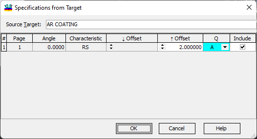

Specifications from Target
Specifications from Target
Navigation: OptiLayer Menu Commands > Data Menu > Spectral/Angular Specifications >
Specifications from Target
` <specification_qualifiers.html>`__ ` <spectral_angular_specification.html>`__ ` <integral_specifications.html>`__

The Source Target drop-down box in the OptiLayer software enables users to choose any measurement from the Target Database for the Specification generator. Users can also select target pages to be included (using the Include column) and specify the Offset and Qualifier (Q) to be utilized during the Specification generationprocess. This functionality allows for greater flexibility and customization when defining and generating specifications within OptiLayer.